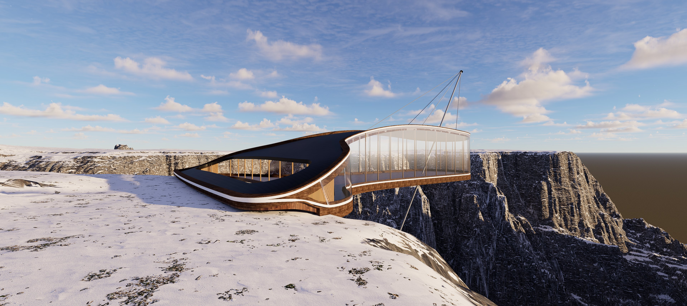
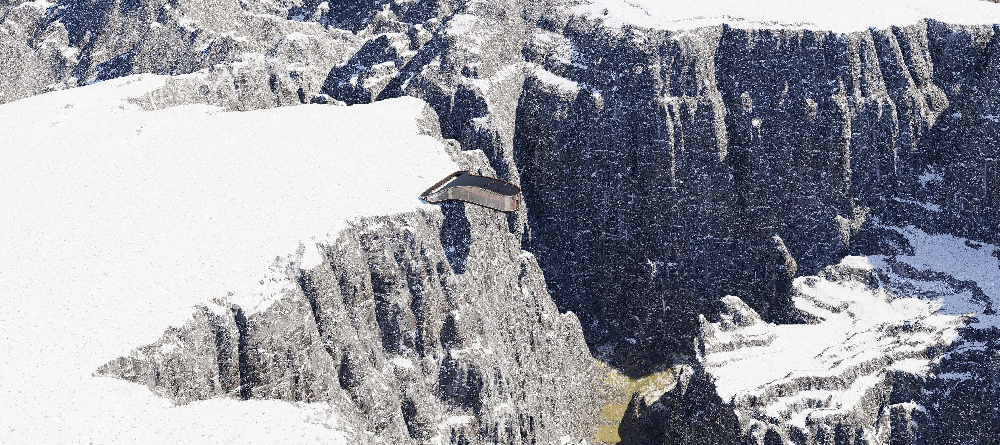
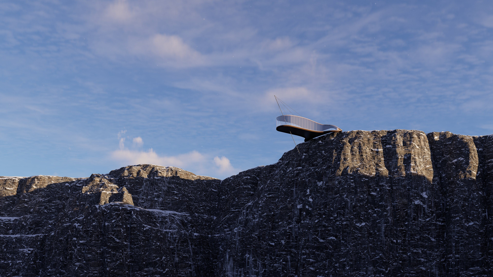
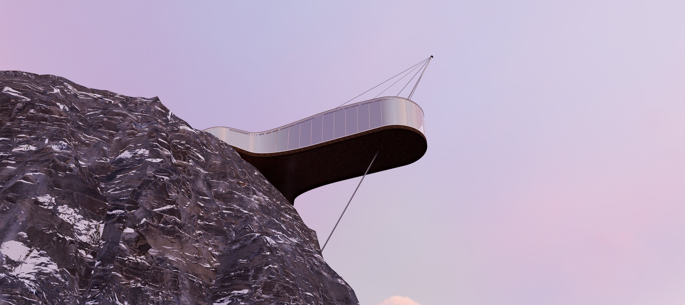
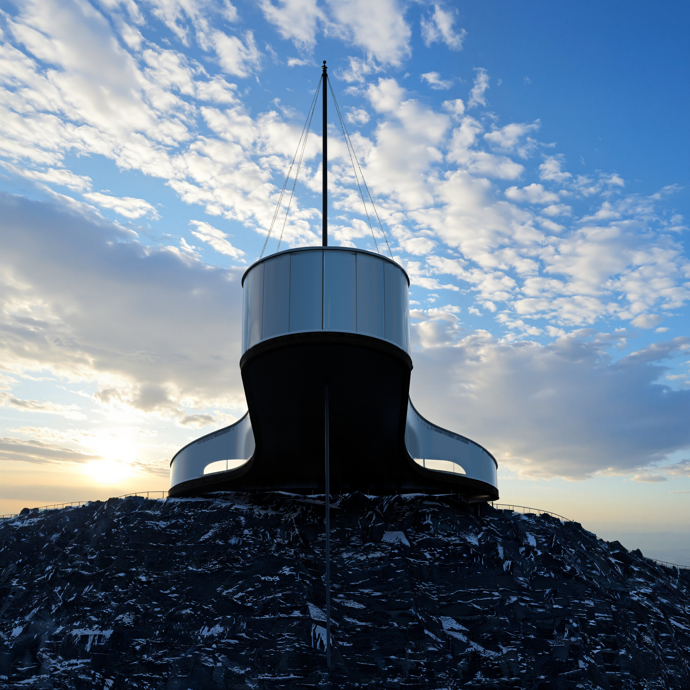
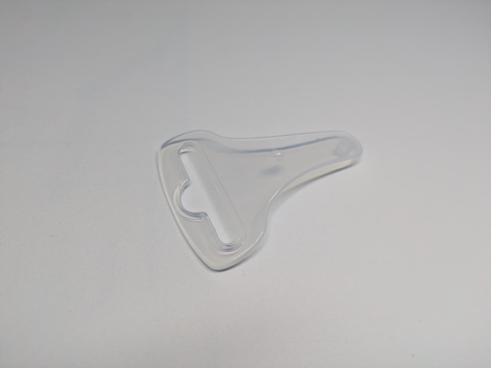
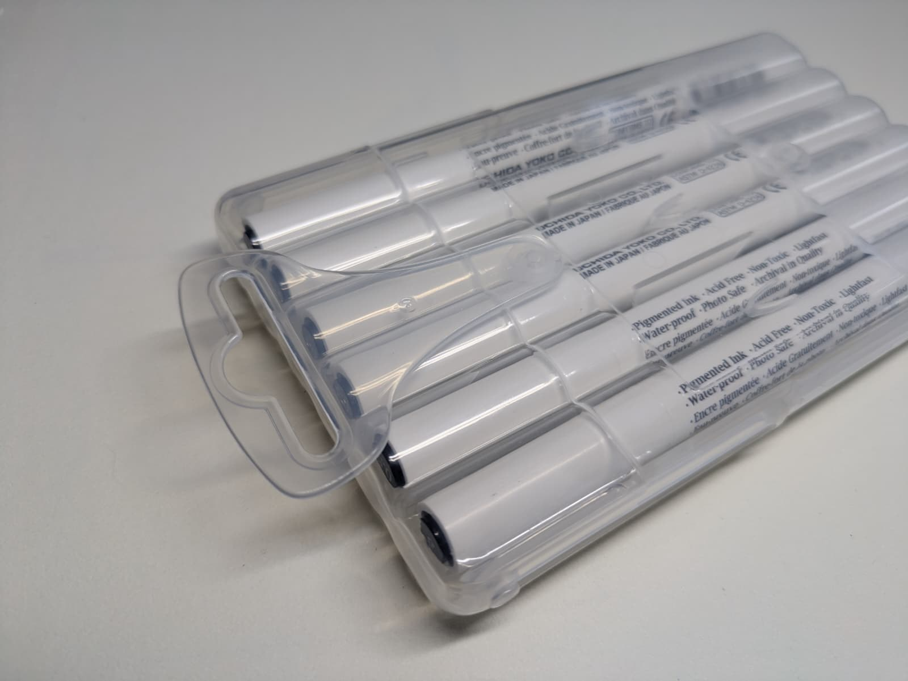
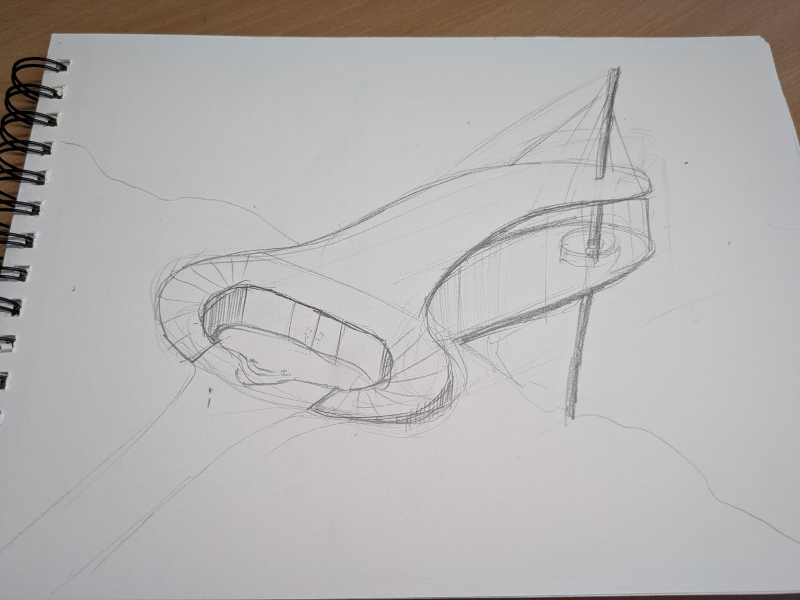
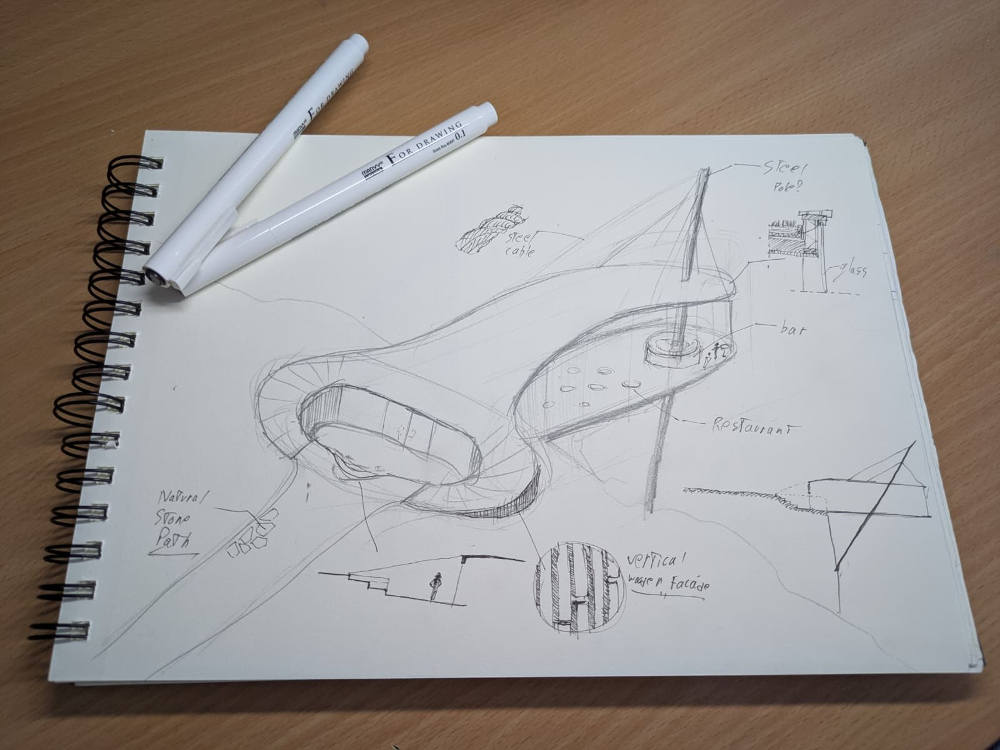

A restaurant and lookout that grows out of a found object — a transparent plastic packaging clip. Its taut, teardrop silhouette became a cantilevering deck that reaches past the cliff edge, held down by a single steel mast and cable stays. Inside: a wooden-clad restaurant and a small bar, wrapped in glass toward the drop.








